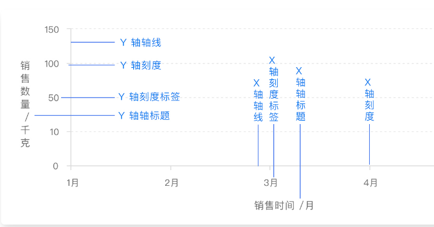

ECharts
001-获取Echarts
- npm：
- npm instal echarts
- CDN：
002-在项目中引入Echarts
- NPM安装Echarts
- npm install echarts —save
- 引入Echarts
- imporr * as echarts from ‘echarts’；
- 按需引入Echarts图表或组件
- import {BarChart} from ‘echarts/charts’；
- TS中按需引入（可使用接口组合）
importtype { // 系列类型的定义后缀都为 SeriesOption BarSeriesOption, LineSeriesOption }from 'echarts/charts';
以下为Echarts的使用
003-图表容器以及大小
A：初始化
- 在HTML中定义具有宽高的父容器
- 传入该图表时，大小默认为父节点大小
<div id="main" style="width: 600px;height:400px;"></div>
<script type="text/javascript">
var myChart = echarts.init(document.getElementById('main'));
</script>
- 指定图表的大小
- 如果图表容器不存在宽度和高度，或者希望图表宽高不等于容器大小，可以在初始化时指定大小
<div id="main"></div>
<script type="text/javascript">
var myChart = echarts.init(document.getElementById('main'), null, {
width: 600,
height: 400
});
</script>
B：相应容器大小的变化
- 通过监听页面变化，图表大小随容器大小而改变
<style>
#main,
html,
body {
width: 100%;
}
#main {
height: 400px;
}
</style>
<div id="main"></div>
<script type="text/javascript">
var myChart = echarts.init(document.getElementById('main'));
window.addEventListener('resize', function() {
myChart.resize(); 重新渲染适应页面
});
</script>
- 为图表设定特定的大小
myChart.resize({
width: 800,
height: 400
});
C：容器节点被销毁以及被重渲染时
- 假设页面存在多个标签页，每个标签页都包含图表，当选中一个标签页时，其他标签页内容在DOM中被移除了，这与当用户再选中这些标签页时，就发现图表不见了
- 本质是由于图表的容器节点被移除导致的，即使该节点之后被重新添加，图标所在的节点也不存在了。
- 正确的做法，在图表容器被销毁之后，调用echartsInstance.dispose销毁实例，在表容器被重新渲染后再次调用echarts的初始化构建
004-Echarts样式主题
- 颜色主题（Theme）
- 调色盘
- 直接样式设置（itemStyle、lineStyle、areaStyle…）
- 视觉映射（visualMap）
A：颜色主题
- 最简单的改变全局样式的方法
- 切换深色主题
- var chart = echarts.init（dom，‘dark’）
- 其他的主题，没有内置在Echarts中，需要自己加载，这些主题可以在主题编辑器中访问。https://echarts.apache.org/zh/theme-builder.html
- 保存为JS文件，直接引入即可
- 保存为JSON文件，需要自行加载和注册
// 假设主题名称是 "vintage"
fetch('theme/vintage.json')
.then(r => r.json())
.then(theme => {
echarts.registerTheme('vintage', theme);
var chart = echarts.init(dom, 'vintage');
})
B：调色盘
- 可以在option中设置，给定一组颜色，图形、系列会自动从其中选择颜色，也可以设置全局的调色盘
option = {
// 全局调色盘。
color: [
'#c23531',
'#2f4554',
'#61a0a8',
'#d48265',
'#91c7ae',
'#749f83',
'#ca8622',
'#bda29a',
'#6e7074',
'#546570',
'#c4ccd3'
],series: [
{
type: 'bar',
// 此系列自己的调色盘。
color: [
'#dd6b66',
'#759aa0',
'#e69d87',
'#8dc1a9',
'#ea7e53',
'#eedd78',
'#73a373',
'#73b9bc',
'#7289ab',
'#91ca8c',
'#f49f42'
]
// ...
},
{
type: 'pie',
// 此系列自己的调色盘。
color: [
'#37A2DA',
'#32C5E9',
'#67E0E3',
'#9FE6B8',
'#FFDB5C',
'#ff9f7f',
'#fb7293',
'#E062AE',
'#E690D1',
'#e7bcf3',
'#9d96f5',
'#8378EA',
'#96BFFF'
]
// ...
}
]
};
C：直接的样式设置
- 比较常用的设置方式，Echarts的option中，设置itemStyle、LineStyle、label等等。直接修改图形的颜色、线宽、点大小、标签样式等等。
D：高亮样式：emphasis
- 当鼠标悬浮图形元素时，一般会高亮显示。
- 高亮的样式可以自己定义，主要通过emphasis。
option = {
series: {
type: 'scatter',// 普通样式。 itemStyle: { // 点的颜色。 color: 'red' }, label: { show: true, // 标签的文字。 formatter: 'This is a normal label.' }, // 高亮样式。 emphasis: { itemStyle: { // 高亮时点的颜色。 color: 'blue' }, label: { show: true, // 高亮时标签的文字。 formatter: 'This is a emphasis label.' } }}
};
E：通过visualMap组件设定样式。
- visualMap组件能指定数据到颜色、图形大小的映射规则
005-Echasrts数据集
- 数据集时管理数据的组件，可以在series.data中设置数据，但是不方便管理，多数情况，配置不会改变，数据改变
A：在系列中设置数据
- 在系列series中设置数据
option = {
xAxis: {
type: 'category',
data: ['Matcha Latte', 'Milk Tea', 'Cheese Cocoa', 'Walnut Brownie']
},
yAxis: {},
series: [
{
type: 'bar',
name: '2015',
data: [89.3, 92.1, 94.4, 85.4]
},
{
type: 'bar',
name: '2016',
data: [95.8, 89.4, 91.2, 76.9]
},
{
type: 'bar',
name: '2017',
data: [97.7, 83.1, 92.5, 78.1]
}
]
};
- 优点在于，对于一些特殊的数据结构，进行特定的数据类型定制。缺点是需要用户先处理数据，把数据分割到各个系列中，此外，不利于多个系列共享数据，也不利于基于原始数据进行图表类型、系列的映射安排
B：在数据集中设置数据
- 将数据设置在数据集dataset中。
option = {
legend: {},
tooltip: {},
dataset: {
// 提供一份数据。
source: [
['product', '2015', '2016', '2017'],
['Matcha Latte', 43.3, 85.8, 93.7],
['Milk Tea', 83.1, 73.4, 55.1],
['Cheese Cocoa', 86.4, 65.2, 82.5],
['Walnut Brownie', 72.4, 53.9, 39.1]
]
},
// 声明一个 X 轴，类目轴（category）。默认情况下，类目轴对应到 dataset 第一列。
xAxis: { type: 'category' },
// 声明一个 Y 轴，数值轴。
yAxis: {},
// 声明多个 bar 系列，默认情况下，每个系列会自动对应到 dataset 的每一列。
series: [{ type: 'bar' }, { type: 'bar' }, { type: 'bar' }]
};
- 优点在于，能够贴近数据可视化常见思维【提供数据⇒指定数据到视觉的映射⇒形成图表】
- 数据和其他配置分开，易于管理
- 数据可以被多个系列或组件复用，对于大数据量场景，不必为每个系列创建一份数据
- 支持更多数据格式，二维数组、对象数组等
- 对象数组格式数据为例
option = {
legend: {},
tooltip: {},
dataset: {
// 用 dimensions 指定了维度的顺序。直角坐标系中，如果 X 轴 type 为 category，
// 默认把第一个维度映射到 X 轴上，后面维度映射到 Y 轴上。
// 如果不指定 dimensions，也可以通过指定 series.encode
// 完成映射，参见后文。
dimensions: ['product', '2015', '2016', '2017'],
source: [
{ product: 'Matcha Latte', '2015': 43.3, '2016': 85.8, '2017': 93.7 },
{ product: 'Milk Tea', '2015': 83.1, '2016': 73.4, '2017': 55.1 },
{ product: 'Cheese Cocoa', '2015': 86.4, '2016': 65.2, '2017': 82.5 },
{ product: 'Walnut Brownie', '2015': 72.4, '2016': 53.9, '2017': 39.1 }
]
},
xAxis: { type: 'category' },
yAxis: {},
series: [{ type: 'bar' }, { type: 'bar' }, { type: 'bar' }]
};
C：数据到图形的映射
- 数据可视化的一个常见思路【提供数据⇒指定数据到视觉的映射】
- 进行这些映射的设定
- 指定数据集的列column或者说行row映射为系列series。这个可以在series.seriesLayoutBy属性进行配置，默认为列column映射
- 指定维度映射规则：如何从dataset的维度映射到坐标轴。可以适应series.encode属性以及visualMap组件进行配置。Echarts默认使用X轴声明为类目轴，自动对于dataser第一列。后者依次对应
D：把数据集dataset的行或列映射为系列series
- 有了数据表之后，可以灵活的配置，数据如何对应到轴和图形系列
- 可以使用seriesLayouyBy配置项，改变图表对于行列的理解，seriesLayoutBy可以取值为：
- column，默认值，系列series被安放到dataset的列上面
- row，系列series被安放到dataset的行上面
E：维度 dimension
- 常用图标所描述的数据大部分是二维表结构。把系列series对应到列的时候，每一列就是一个维度，每一行就是数据项。反之将系列series对应到行
- 维度可以有单独的名字在图表中显示，维度名可以在定义在dataset的第一行或第一列，第二行开始时正式的数据。
- dataset.source中的第一行/列是否包含维度名，Echarts会默认自动探测。也可以设置dataset.sourceHeader：true显示第一行就是维度，false为数据
- 维度的定义，也可以使用单独的dataset.dimensions或者series.dimensions来定义，这样可以同时指定维度名和维度类型
var option1 = {
dataset: {
dimensions: [
{ name: 'score' },
// 可以简写为 string ，表示 dimension name 。
'amount',
// 可以在 type 中指定维度类型。
{ name: 'product', type: 'ordinal' }
],
source: [
//...
]
}
// ...
};var option2 = {
dataset: {
source: [
// ...
]
},
series: {
type: 'line',
// series.dimensions 会更优先于 dataset.dimension 采纳。
dimensions: [
null, // 可以设置为 null 表示不想设置维度名
'amount',
{ name: 'product', type: 'ordinal' }
]
}
// ...
};
- 大多数情况下，不需要设置维度类型，因为Echarts会自动判断。如果不够准确，可以手动设置维度类型，维度类型取值如下：
- number，默认，表示普通数据
- prdinal，对于类目、文本等string类型数据，如果在数轴上显示，必须是ordinal类型
- time，表示时间数据，设置为time，能支持自动解析数据成时间戳，比如2017-05-10会被自动解析为time类型
- float，在存储时会使用TypedArray，对性能优化有好处
- int，在存储时会使用TypedArray，对性能优化有好处
F：数据到图形的映射series.encode
- 以代码为例
var option = {
dataset: {
source: [
['score', 'amount', 'product'],
[89.3, 58212, 'Matcha Latte'],
[57.1, 78254, 'Milk Tea'],
[74.4, 41032, 'Cheese Cocoa'],
[50.1, 12755, 'Cheese Brownie'],
[89.7, 20145, 'Matcha Cocoa'],
[68.1, 79146, 'Tea'],
[19.6, 91852, 'Orange Juice'],
[10.6, 101852, 'Lemon Juice'],
[32.7, 20112, 'Walnut Brownie']
]
},
xAxis: {},
yAxis: { type: 'category' },
series: [
{
type: 'bar',
encode: {
// 将 "amount" 列映射到 X 轴。
x: 'amount',
// 将 "product" 列映射到 Y 轴。
y: 'product'
}
}
]
};
- series.encode声明结构如下，冒号左边为坐标系、标签等特定每次。右边为数据中的维度名string，或维度序号number
- 如下代码为series.encode支持的属性
// 在任何坐标系和系列中，都支持：
encode: {
// 使用 “名为 product 的维度” 和 “名为 score 的维度” 的值在 tooltip 中显示
tooltip: ['product', 'score']
// 使用 “维度 1” 和 “维度 3” 的维度名连起来作为系列名。（有时候名字比较长，这可以避免在
series.name 重复输入这些名字）
seriesName: [1, 3],
// 表示使用 “维度2” 中的值作为 id。这在使用 setOption 动态更新数据时有用处，可以使新老数据用 id 对应起来，从而能够产生合适的数据更新动画。
itemId: 2,
// 指定数据项的名称使用 “维度3” 在饼图等图表中有用，可以使这个名字显示在图例（legend）中。
itemName: 3
}// 直角坐标系（grid/cartesian）特有的属性：
encode: {
// 把 “维度1”、“维度5”、“名为 score 的维度” 映射到 X 轴：
x: [1, 5, 'score'],
// 把“维度0”映射到 Y 轴。
y: 0
}// 单轴（singleAxis）特有的属性：
encode: {
single: 3
}// 极坐标系（polar）特有的属性：
encode: {
radius: 3,
angle: 2
}// 地理坐标系（geo）特有的属性：
encode: {
lng: 3,
lat: 2
}// 对于一些没有坐标系的图表，例如饼图、漏斗图等，可以是：
encode: {
value: 3
}
G：默认的series.encode
- 当series.encode没有指定时，Echartes针对常见的图表类型会采取默认的映射规则，规则如下
- 在坐标系中
- 如果有类目轴（axis.type为category），则将第一列/行映射到该轴，后续每一列/行对应一个系列
- 如果没有类目轴，假设坐标系有两个轴XY，每两列对应一个系列，两列分别映射到这两个轴
- 没有坐标系
- 取第一列/行为名字，第二列/行为数值，如果只有一列，取第一列为数值
- 在坐标系中
H：常见的series.encode设置方式举例
- 把第三列设置为X轴，第五列设置为Y轴
option = {
series: {
// 注意维度序号（dimensionIndex）从 0 开始计数，第三列是 dimensions[2]。
encode: { x: 2, y: 4 }
// ...
}
};
- 第三行为X轴，第五行为Y轴
option = {
series: {
encode: { x: 2, y: 4 },
seriesLayoutBy: 'row'
// ...
}
};
- 把第二列设置为标签label.formatter，标签的显示，支持引用特定维度的值
series: {
label: {
//'{@score}'表示 “名为 score” 的维度里的值。
//'{@[4]}'表示引用序号为 4 的维度里的值。
formatter: 'aaa{@product}bbb{@score}ccc{@[4]}ddd';
}
}
- 让第二列和第三列显示在提示框tooltip中
option = {
series: {
encode: {
tooltip: [1, 2]
// ...
}
// ...
}
};
- 数据里没有维度名，手动设置维度名
var option = {
dataset: {
dimensions: ['score', 'amount'],
source: [
[89.3, 3371],
[92.1, 8123],
[94.4, 1954],
[85.4, 829]
]
}
};
- 把第三列映射为气泡图点的大小
var option = {
dataset: {
source: [
[12, 323, 11.2],
[23, 167, 8.3],
[81, 284, 12],
[91, 413, 4.1],
[13, 287, 13.5]
]
},
visualMap: {
show: false,
dimension: 2, // 指向第三列（列序号从 0 开始记，所以设置为 2）。
min: 2, // 需要给出数值范围，最小数值。
max: 15, // 需要给出数值范围，最大数值。
inRange: {
// 气泡尺寸：5 像素到 60 像素。
symbolSize: [5, 60]
}
},
xAxis: {},
yAxis: {},
series: {
type: 'scatter'
}
};
I：数据的各种格式
- 多数常见的图表，数据都适用于二维表形式描述。可以导出为JSON格式
- 处理二维数组，dataset也支持键值对key-value形式的数据格式
dataset: [
{
// 按行的 key-value 形式（对象数组），这是个比较常见的格式。
source: [
{ product: 'Matcha Latte', count: 823, score: 95.8 },
{ product: 'Milk Tea', count: 235, score: 81.4 },
{ product: 'Cheese Cocoa', count: 1042, score: 91.2 },
{ product: 'Walnut Brownie', count: 988, score: 76.9 }
]
},
{
// 按列的 key-value 形式。
source: {
product: ['Matcha Latte', 'Milk Tea', 'Cheese Cocoa', 'Walnut Brownie'],
count: [823, 235, 1042, 988],
score: [95.8, 81.4, 91.2, 76.9]
}
}
];
J：多个dataset以及如何引用
- 可以同时定义多个dataset，系列可以通过series.datasetIndex来指定引用哪个dataset
var option = {
dataset: [
{
// 序号为 0 的 dataset。
source: []
},
{
// 序号为 1 的 dataset。
source: []
},
{
// 序号为 2 的 dataset。
source: []
}
],
series: [
{
// 使用序号为 2 的 dataset。
datasetIndex: 2
},
{
// 使用序号为 1 的 dataset。
datasetIndex: 1
}
]
};
006-Echarts数据转换
- Echarts数据转换指给定一个数据集dataset和一个转换方法transform，echarts能生成一个新的数据集
- 通过数据转换可以实现
- 把数据分成多份使用不同的饼图展现
- 进行一些数据统计运算，并展示结果
- 使用某些数据可视化算法处理数据，并展示结果
- 数据排序
- 去除或直选择数据项等等
A：数据转换基础应用
- 在空的dataset中声明transform，fromDatasetIndex/fromDatasetId来表示我们要生成的新数据
- 系列引用这个dataset
var option = {
dataset: [
{
// 这个 dataset 的 index 是0。
source: [
['Product', 'Sales', 'Price', 'Year'],
['Cake', 123, 32, 2011],
['Cereal', 231, 14, 2011],
['Tofu', 235, 5, 2011],
['Dumpling', 341, 25, 2011],
['Biscuit', 122, 29, 2011],
['Cake', 143, 30, 2012],
['Cereal', 201, 19, 2012],
['Tofu', 255, 7, 2012],
['Dumpling', 241, 27, 2012],
['Biscuit', 102, 34, 2012],
['Cake', 153, 28, 2013],
['Cereal', 181, 21, 2013],
['Tofu', 395, 4, 2013],
['Dumpling', 281, 31, 2013],
['Biscuit', 92, 39, 2013],
['Cake', 223, 29, 2014],
['Cereal', 211, 17, 2014],
['Tofu', 345, 3, 2014],
['Dumpling', 211, 35, 2014],
['Biscuit', 72, 24, 2014]
]
// id: 'a'
},
{
// 这个 dataset 的 index 是1。
// 这个transform配置，表示，此 dataset 的数据，来自于此 transform 的结果。
transform: {
type: 'filter',
config: { dimension: 'Year', value: 2011 }
}
// 我们还可以设置这些可选的属性：fromDatasetIndex或fromDatasetId。
// 这些属性，指定了，transform 的输入，来自于哪个 dataset。例如，
//fromDatasetIndex: 0表示输入来自于 index 为0的 dataset 。又例如，
//fromDatasetId: 'a'表示输入来自于id: 'a'的 dataset。
// 当这些属性都不指定时，默认认为，输入来自于 index 为0的 dataset 。
},
{
// 这个 dataset 的 index 是2。
// 同样，这里因为fromDatasetIndex和fromDatasetId都没有被指定，
// 那么输入默认来自于 index 为0的 dataset 。
transform: {
// 这个类型为 "filter" 的 transform 能够遍历并筛选出满足条件的数据项。
type: 'filter',
// 每个 transform 如果需要有配置参数的话，都须配置在config里。
// 在这个 "filter" transform 中，config用于指定筛选条件。
// 下面这个筛选条件是：选出维度（ dimension ）'Year' 中值为 2012 的所有
// 数据项。
config: { dimension: 'Year', value: 2012 }
}
},
{
// 这个 dataset 的 index 是3。
transform: {
type: 'filter',
config: { dimension: 'Year', value: 2013 }
}
}
],
series: [
{
type: 'pie',
radius: 50,
center: ['25%', '50%'],
// 这个饼图系列，引用了 index 为1的 dataset 。也就是，引用了上述
// 2011 年那个 "filter" transform 的结果。
datasetIndex: 1
},
{
type: 'pie',
radius: 50,
center: ['50%', '50%'],
datasetIndex: 2
},
{
type: 'pie',
radius: 50,
center: ['75%', '50%'],
datasetIndex: 3
}
]
};
B：数据转换的进阶使用
- 链式声明transform
option = {
dataset: [
{
source: [
// 原始数据
]
},
{
// 几个 transform 被声明成 array ，他们构成了一个链，
// 前一个 transform 的输出是后一个 transform 的输入。
transform: [
{
type: 'filter',
config: { dimension: 'Product', value: 'Tofu' }
},
{
type: 'sort',
config: { dimension: 'Year', order: 'desc' }
}
]
}
],
series: {
type: 'pie',
// 这个系列引用上述 transform 的结果。
datasetIndex: 1
}
};- 理论上任何transform都可能有多个输入或多个输出，但是如果一个transform被链式声明，它只能获取前一个transform的第一个输出作为输入，第一个除外。以及他只能把自己的第一个输出给后一个，最后一个除外
- 一个transform输出多个data
- 大多数情况，transform只需输入一个data，但是某些场景，需要输出多个data，每个data被不同的series或dataset使用
option = {
dataset: [
{
// 这个 dataset 的 index 为0。
source: [
// 原始数据
]
},
{
// 这个 dataset 的 index 为1。
transform: {
type: 'boxplot'
}
// 这个 "boxplot" transform 生成了两个数据：
// result[0]: boxplot series 所需的数据。
// result[1]: 离群点数据。
// 当其他 series 或者 dataset 引用这个 dataset 时，他们默认只能得到
// result[0] 。
// 如果想要他们得到 result[1] ，需要额外声明如下这样一个 dataset ：
},
{
// 这个 dataset 的 index 为2。
// 这个额外的 dataset 指定了数据来源于 index 为1的 dataset。
fromDatasetIndex: 1,
// 并且指定了获取 transform result[1] 。
fromTransformResult: 1
}
],
xAxis: {
type: 'category'
},
yAxis: {},
series: [
{
name: 'boxplot',
type: 'boxplot',
// Reference the data from result[0].
// 这个 series 引用 index 为1的 dataset 。
datasetIndex: 1
},
{
name: 'outlier',
type: 'scatter',
// 这个 series 引用 index 为2的 dataset 。
// 从而也就得到了上述的 transform result[1] （即离群点数据）
datasetIndex: 2
}
};
- 大多数情况，transform只需输入一个data，但是某些场景，需要输出多个data，每个data被不同的series或dataset使用
- 在开发环境中debug
- 使用transform时，有时候会配不对，显示不出来结果，而且不知道哪里错了，使用transform.print来debug
option = {
dataset: [
{
source: []
},
{
transform: {
type: 'filter',
config: {},
// 配置为true后， transform 的结果
// 会被 console.log 打印出来。
print: true
}
}
]
// ...
};
- 使用transform时，有时候会配不对，显示不出来结果，而且不知道哪里错了，使用transform.print来debug
C：数据转换器：filter
- echarts中通过了过滤作用的数据转换器，只需要声明transform.type：”filter“，以及给出筛选条件，例子如下
option = {
dataset: [
{
source: [
['Product', 'Sales', 'Price', 'Year'],
['Cake', 123, 32, 2011],
['Latte', 231, 14, 2011],
['Tofu', 235, 5, 2011],
['Milk Tee', 341, 25, 2011],
['Porridge', 122, 29, 2011],
['Cake', 143, 30, 2012],
['Latte', 201, 19, 2012],
['Tofu', 255, 7, 2012],
['Milk Tee', 241, 27, 2012],
['Porridge', 102, 34, 2012],
['Cake', 153, 28, 2013],
['Latte', 181, 21, 2013],
['Tofu', 395, 4, 2013],
['Milk Tee', 281, 31, 2013],
['Porridge', 92, 39, 2013],
['Cake', 223, 29, 2014],
['Latte', 211, 17, 2014],
['Tofu', 345, 3, 2014],
['Milk Tee', 211, 35, 2014],
['Porridge', 72, 24, 2014]
]
},
{
transform: {
type: 'filter',
config: { dimension: 'Year', '=': 2011 }
// 这个筛选条件表示，遍历数据，筛选出维度（ dimension ）
// 'Year' 上值为 2011 的所有数据项。
}
}
],
series: {
type: 'pie',
datasetIndex: 1
}
};
- 在filter选择中有如下要素
- 维度dimension
- config.dimension制定了维度，可以设置为
- 设定成声明在dataset中的维度名，例如config：{dimension：‘year’，“=”：2021}.
- dataset中维度名的声明并非强制，也可以设定为dataset中的维度index，例如config：{dimension：3，‘=’：2021}
- config.dimension制定了维度，可以设置为
- 关系比较操作符
- >,≥,<,≤,=,≠,reg等
- 多个关系操作符在一个{}中声明，表示与的关系 ‘>=’：20，‘<’：50
- data的值不仅是数值number，也可以是string，“123”，转换过程中空格和换行符都能被消除
- 如果需要日期对象或者日期字符串进行比较，需要手动指定parser：“time”，例如config: { dimension: 3, lt: '2012-05-12', parser: 'time' }
- 纯字符串也支持比较，只能使用= 和！=
- reg操作符能提供正则表达式比较，{ dimension: 'Name', reg: /\s+Müller\s*$/ }，可以在name维度选出性Muller的数据
- >,≥,<,≤,=,≠,reg等
- 逻辑比较
- 与或非（and or not）可以被嵌套
- 解析器parser
- 可以指定parser对值进行解析后在做比较，支持的解析器如下
- parser：‘time’，把原始值解析成时间戳，在比较
- parser：‘trim’，如果原始值是字符串，则把字符串两端的空格和换行符去掉，如果不是字符串，保持为原始数据
- parser：‘number’，强制把原始数据转换为数值，如果无意义，则为NaN
- 可以指定parser对值进行解析后在做比较，支持的解析器如下
- filter的config形式化定义
type FilterTransform = {
type: 'filter';
config: ConditionalExpressionOption;
};
type ConditionalExpressionOption =
| true
| false
| RelationalExpressionOption
| LogicalExpressionOption;
type RelationalExpressionOption = {
dimension: DimensionName | DimensionIndex;
parser?: 'time' | 'trim' | 'number';
lt?: DataValue; // less than
lte?: DataValue; // less than or equal
gt?: DataValue; // greater than
gte?: DataValue; // greater than or equal
eq?: DataValue; // equal
ne?: DataValue; // not equal
'<'?: DataValue; // lt
'<='?: DataValue; // lte
'>'?: DataValue; // gt
'>='?: DataValue; // gte
'='?: DataValue; // eq
'!='?: DataValue; // ne
'<>'?: DataValue; // ne (SQL style)
reg?: RegExp | string; // RegExp
};
type LogicalExpressionOption = {
and?: ConditionalExpressionOption[];
or?: ConditionalExpressionOption[];
not?: ConditionalExpressionOption;
};
type DataValue = string | number | Date;
type DimensionName = string;
type DimensionIndex = number;
- 维度dimension
D：数据转换器：sort
- sort是另一个内置的数据转换器，用于排序数据，主要能用于在类目轴axis.type：‘category’中显示排序后的数据
- 例如
option = {
dataset: [
{
dimensions: ['name', 'age', 'profession', 'score', 'date'],
source: [
[' Hannah Krause ', 41, 'Engineer', 314, '2011-02-12'],
['Zhao Qian ', 20, 'Teacher', 351, '2011-03-01'],
[' Jasmin Krause ', 52, 'Musician', 287, '2011-02-14'],
['Li Lei', 37, 'Teacher', 219, '2011-02-18'],
[' Karle Neumann ', 25, 'Engineer', 253, '2011-04-02'],
[' Adrian Groß', 19, 'Teacher', null, '2011-01-16'],
['Mia Neumann', 71, 'Engineer', 165, '2011-03-19'],
[' Böhm Fuchs', 36, 'Musician', 318, '2011-02-24'],
['Han Meimei ', 67, 'Engineer', 366, '2011-03-12']
]
},
{
transform: {
type: 'sort',
// 按分数排序
config: { dimension: 'score', order: 'asc' }
}
}
],
series: {
type: 'bar',
datasetIndex: 1
}
// ...
};
- 数据转换器：sort具有以下额外功能
- 可以多重排序，多个维度一起排序
- 排序规则如下
- 默认按照数值大小排序，可以转为数值的字符串和其他数值按大小排序
- 不能转为数值的字符串，在他们之间可以按字符串进行排序。
- 可以转为数值的字符串，和不能转为数值的字符串排序。后者他们和其他类型进行排序。可以设置incomparable：‘min’|‘max’来指定比较的大小，来产生饥饿感
- 可以使用解析器parser：‘time’/‘trim’/‘number’与filter情况一致
- 多维度排序例子如下
option = {
dataset: [
{
dimensions: ['name', 'age', 'profession', 'score', 'date'],
source: [
[' Hannah Krause ', 41, 'Engineer', 314, '2011-02-12'],
['Zhao Qian ', 20, 'Teacher', 351, '2011-03-01'],
[' Jasmin Krause ', 52, 'Musician', 287, '2011-02-14'],
['Li Lei', 37, 'Teacher', 219, '2011-02-18'],
[' Karle Neumann ', 25, 'Engineer', 253, '2011-04-02'],
[' Adrian Groß', 19, 'Teacher', null, '2011-01-16'],
['Mia Neumann', 71, 'Engineer', 165, '2011-03-19'],
[' Böhm Fuchs', 36, 'Musician', 318, '2011-02-24'],
['Han Meimei ', 67, 'Engineer', 366, '2011-03-12']
]
},
{
transform: {
type: 'sort',
config: [
// 对两个维度按声明的优先级分别排序。
{ dimension: 'profession', order: 'desc' },
{ dimension: 'score', order: 'desc' }
]
}
}
],
series: {
type: 'bar',
datasetIndex: 1
}
//...
};
- 例如
007-Echarts坐标轴
- 直角坐标系中的XY轴
A：XY轴
- x轴与y轴都由轴线、刻度、刻度标签、轴标题四个部分组成。部分图表中有网格线来帮助查看和计算数据

{kind=link}
- 普通二维数据坐标系有XY轴，通常X轴在图标底部，Y轴在左侧，配置如下

- x轴常用来标识数据维度，维度一般用来指数据的类别，是观察数据的角度，例如‘销售时间、销售地点、产品名称’等，
- y轴常用来标识数据的数值，数值是用来具体考察某一类数据的数量值，也就是分析的指标，例如‘销售数量、销售金额’

- 当x轴跨度很大，可以采用区域缩放方式灵活显示数据内容

- 在二维数据中，轴可以有多个，一般情况下单个组件只能放两个XY轴，多于两个需要配置offset属性防止同一位置多个轴重叠。两个x轴显示在上下，两个y轴显示在左右两侧

B：轴线
- Echarts提供了轴线axisLine的属性配置，可以根据实际情况调整，例如周线两端的箭头，样式等等

C：刻度
- Echarts提供了相关刻度axisTick的属性配置，可以自行修改，例如可读性长度、样式等

D：刻度标签
- Echarts提供了刻度标签axisLabel相关的属性配置，例如文字对齐方式、自定义刻度标签内容等

008-Echarts视觉映射
- 数据可视化是数据到视觉元素的映射过程
- Echarts提供了visualMap组件提供通用的视觉映射，visualMap组件可以使用的视觉元素如下
- 图形类别symbol、图形大小symbolSize
- 颜色color、透明度opacity、颜色透明度colorAlpha
- 颜色明暗度colorLightness、颜色饱和度colorSaturation、色调colorHue
A：数据和维度
- 数据一般存放于series.data中，根据图表类型不同，数据的具体形式也不同
- 例如，可能是线性表、树、图等，都是数据项的集合，每个数据项含有数据值和其他信息，每个数据之可以是单一的数值（一维）或者一个数组（多维）


- 图表中，默认把value的前一两个维度进行映射，比如取第一个维度映射x轴，第二个维度映射y轴，要想展现更多维度，需要借助visualMap，
- 例如，可能是线性表、树、图等，都是数据项的集合，每个数据项含有数据值和其他信息，每个数据之可以是单一的数值（一维）或者一个数组（多维）
B：visualMap组件
- visualMap组件定义了把数据的那个维度映射到什么视觉元素上
- 提供两种类型visualMap组件，通过visualMap.type来区分

C：连续型与分段行视觉映射组件
- 连续型是进行视觉映射的数据维度是连续的数值，
- 分段型是数据被分成了多段或者是离散型的数据
- 连续型视觉映射
- 连续型视觉映射通过指定最大值、最小值，就可以确定视觉映射的范围

- 其中visualMap.inRange表示了在数据映射范围内的数据采用的样式。
- visualMap.outOfRange制定了超出映射范围外的数据样式
- visualMap.dimension制定了将数据的哪个维度做视觉映射
- 连续型视觉映射通过指定最大值、最小值，就可以确定视觉映射的范围
- 分段型视觉映射
- 分段型视觉映射组件有三种模式
- 连续型数据平均分段：使用visualMap-piecewise.splitNumber来自动平均分割成若干块
- 连续性数据自定义分段：使用visualMap-piecewise.pieces来定义每块范围
- 离散数据（类别性数据）：使用visualMap-piecewise.categories来配置
- 使用分段型视觉映射时，需要将type设为piecewise，并将上面的三个配置项选一个配置
- 分段型视觉映射组件有三种模式
- 连续型视觉映射
009-Echarts图例
- 图例是图表中对内容区元素的注释、用不同形状、颜色、文字来标识不同的数据列，通过点击对应数据列的标记，可以显示或隐藏该数据列，
- 图例是了解图标信息的关键
A：布局
- 图例一般放在图表右上角、也可以放在图标底部、同一页面中所有图例位置保持一致即可，可以横排、纵排对齐。

- 图例过多时，可以使用滚动翻页的图例

B：样式
- 在深色背景下，方便阅读，建议给图例加上半透明浅色背景曾，文字颜色设置为浅色

- 图例的颜色标签有很多种设计方式，针对不同的图表，图例样式也会不同
C：交互
- 根据场景需要，图例可支持交互操作，点击空值显示或隐藏对应的数据列

D：注意事项
- 图例要注意视情况使用，有些双轴图包含了多种图表类型，不同类型的图例样式要有所区分

- 当图标只有一种数据信息时，用图表标题说明数据信息即可，建议不要加上图例
010-事件与行为
- 用户的操作会触发图表行为，开发者可以监听这些事件，然后通过回调函数做相应的处理，比如跳转网址、弹出对话框、数据下钻等等
- 事件主要分为两种类型，一种是用户鼠标操作点击，或者hover图表的图形时触发，还有就是用户在使用可以交互的组件后处罚的行为时间，例如切换图例时触发，数据区域缩放时
A：鼠标事件的处理
- Echarts支持常规的鼠标事件类型
- click、dblclick、mousedown、mousemove、mouseup、mouseover、mouseout、globalout、contextmenu

- 区分鼠标点击到了那里

- 使用query针对指定的组件的图形元素触发回调
- chart.on（eventName，query，handler）；
- query可以为string或object
- string：string表示为组件类型，格式可以是mainType或mainType.subType

- object：可以包含以下一个或多个属性，属性均可选

- string：string表示为组件类型，格式可以是mainType或mainType.subType
- 可以在回调函数中获得这个对象中的数据名、系列名后在自己的数据仓库中索引得到其他的信息来更新图表、显示浮层等等。

B：组件交互的行为事件
- 下面是监听图列开关的示例

C：代码触发Echarts中组件的行为
- 下面示例，通过dispatchAction取轮流高亮饼图
option = {
title: {
text: '饼图程序调用高亮示例',
left: 'center'
},
tooltip: {
trigger: 'item',
formatter: '{a} <br/>{b} : {c} ({d}%)'
},
legend: {
orient: 'vertical',
left: 'left',
data: ['直接访问', '邮件营销', '联盟广告', '视频广告', '搜索引擎']
},
series: [
{
name: '访问来源',
type: 'pie',
radius: '55%',
center: ['50%', '60%'],
data: [
{ value: 335, name: '直接访问' },
{ value: 310, name: '邮件营销' },
{ value: 234, name: '联盟广告' },
{ value: 135, name: '视频广告' },
{ value: 1548, name: '搜索引擎' }
],
emphasis: {
itemStyle: {
shadowBlur: 10,
shadowOffsetX: 0,
shadowColor: 'rgba(0, 0, 0, 0.5)'
}
}
}
]
};let currentIndex = -1;
setInterval(function() {
var dataLen = option.series[0].data.length;
// 取消之前高亮的图形
myChart.dispatchAction({
type: 'downplay',
seriesIndex: 0,
dataIndex: currentIndex
});
currentIndex = (currentIndex + 1) % dataLen;
// 高亮当前图形
myChart.dispatchAction({
type: 'highlight',
seriesIndex: 0,
dataIndex: currentIndex
});
// 显示 tooltip
myChart.dispatchAction({
type: 'showTip',
seriesIndex: 0,
dataIndex: currentIndex
});
}, 1000);
D：监听空白处的事件
- 有时需要监听空白处的事件，比如用户点击空白时重置图表等
- 明确两种事件：
- zrender事件：鼠标在图形元素上时才会触发。
- echarts事件：鼠标在任何地方都会触发

- 当一个zrender事件在图形元素上被触发时，echarts将触发一个echarts事件给开发者
- 下面示例，使用zender事件监听空白处事件